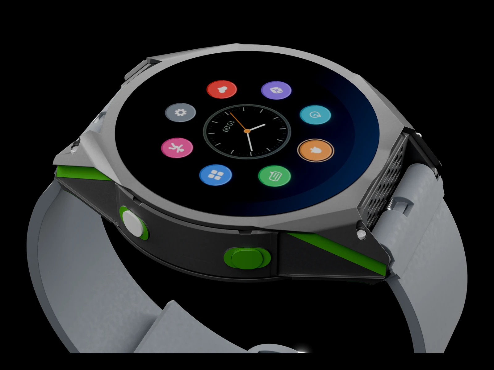
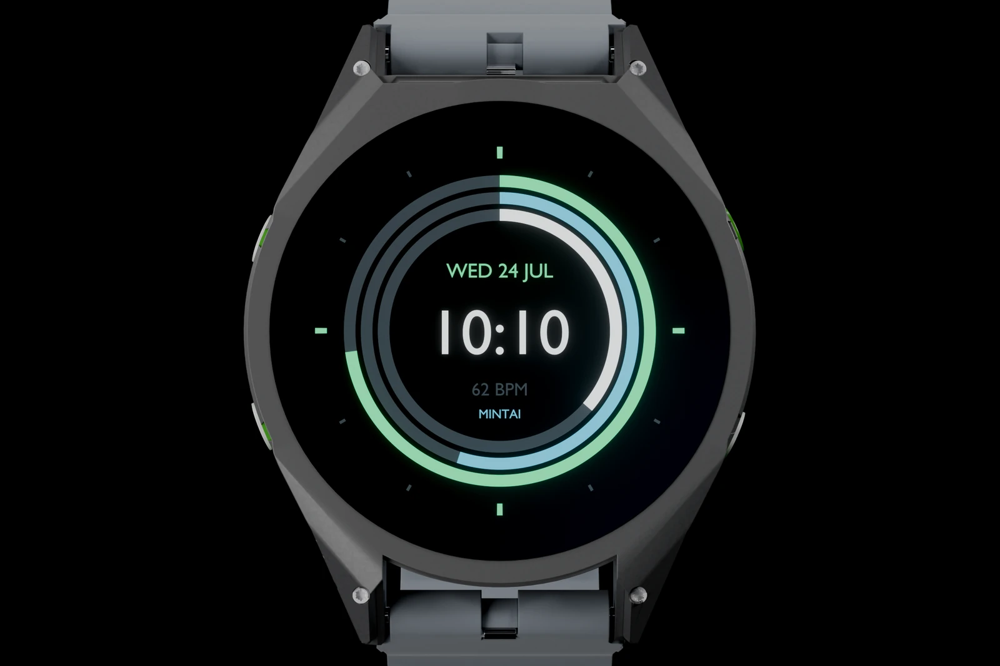
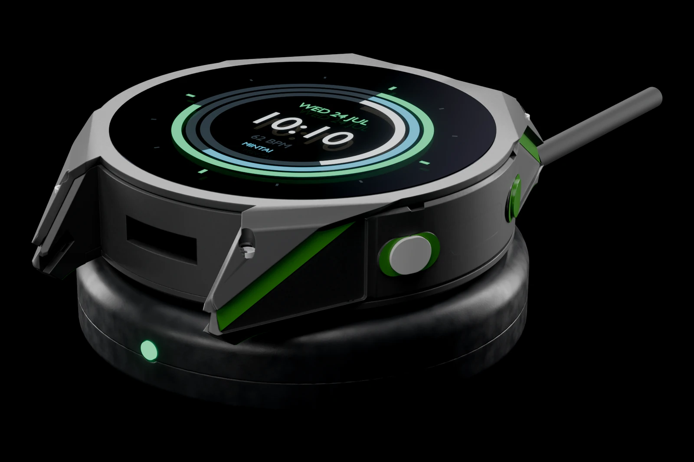

MintWatch learns how you live, looks after your health, and answers right there on your wrist.
Three things make MintWatch different, and none of them asks you to learn anything new.
Every face, every app, every screen and every number you glance at goes where you want it. Move it yourself, or tell MintAI where you want it and it does the rearranging for you.
Ask it something and it acts: book a ride, change a setting, start a workout, sum up your notifications, explain a health reading in plain words.
It still works with your phone left at home. There is a much larger model in the cloud for the hard questions, metered and off until you turn it on, and the watch always tells you which one answered.

A 47 mm case in a ceramic finish that shrugs off the knocks of a normal day, on a soft 24 mm strap you can swap in seconds.
MintWatch does more than mirror your phone. It has its own app store, the apps run on the watch itself, and MintAI will drive them for you across the devices already in your life.
MintWatch has its own app store with thousands of apps, and they run on the watch instead of being mirrored from your phone, so they work with your phone left at home. You can also skip the app: say Hey Mint, get me an Uber from where I am to the airport
and MintAI books it.
MintWatch can open apps, pull up projects and send files to your laptop from your wrist. Say "open my email on my Mac" and your Mac opens it.
MintWatch runs your smart home with a word or a tap. Turn on the kitchen light, lock the door, start the coffee and set the evening scene before you have put your keys down.
Take calls on MintWatch, move a song from your headphones to the kitchen speaker, and find the phone you left on the sofa, all without reaching for your pocket.
It fits around what you already own: any phone, nearly any app, your headphones, your smart home. There is no new ecosystem to buy into.
Tell MintWatch what you are working toward and it builds the plan, then adjusts it around how your week is really going.
Say "bench 200 lb by spring" and it works backward: what to lift today, what to add around it, and when to ease off because your recovery says so.
Not sure of your form? It plays a 3D render of the movement right there on the dial.
Round the clock heart rate, sleep, temperature and stress let it notice you are run down before you feel it, so you can take the easy day.

This is the part you should never have to think about. MintWatch reads its sensors all day and stays out of the way. If a moment ever does go wrong, it already knows what to do.
A hard fall, a car crash, a heart rhythm that is out of character. It reads the moment as it happens and can tell a real emergency apart from an ordinary bump.
If you cannot answer, MintAI calls emergency services and talks to the dispatcher, handing over where you are and what they need to know so help arrives ready.
Satellite reception advanced enough to hold a link through tree cover. In the middle of the Amazon rainforest, on the ground under the canopy, you can take a call. Deep in a canyon, underground, miles from the nearest tower, it reaches help where a phone gives up.
Set it down on the puck, pick it up later. No cable to line up, no nightly ritual, no watch that quits halfway through a hike.
About 7 days with the display always on, about 10 on automatic, and up to 15 in power saver.
Up to 70 days with the display, the sensors and the radios shut down, for the trips where a charger is not coming with you.
Wireless charging, so there is nothing to plug in and nothing to wear out.
Rated up to 10 ATM, which covers the pool, the sea and the shower without a second thought.

MintAI runs on the watch, so your health, your voice and your habits never have to leave it. Nothing is sold. Nothing is shared. Cloud features exist, and they are always yours to switch on or leave off.
MintWatch is not on sale yet. Join the newsletter and you will hear the moment it is, before we announce it anywhere else, with 20% off your pre-release order.
Sign up for the newsletter and get 20% off at pre-release, plus launch news and pricing first. No spam, one click to unsubscribe.
Questions, ideas, or you just want to know how the build is going. Write to contact@mint-ai.tech.